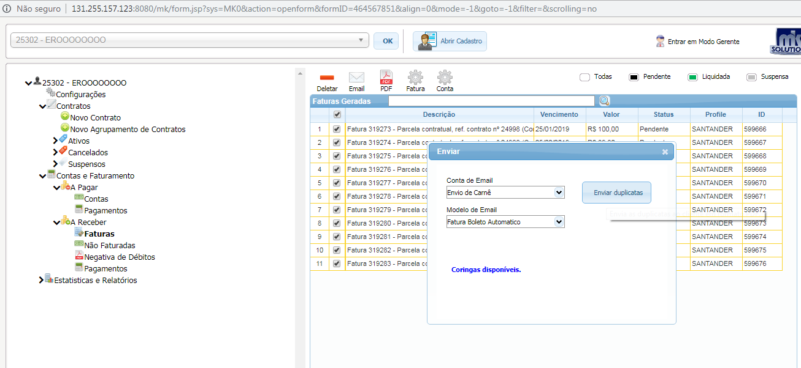

Voltar
Voltar
Pag. Antecipado
- No caso de Liquidação antecipada, Informar para o cliente que será solicitado a alteração do vencimento da parcela que foi paga antecipada, e o desbloqueio da conexão.
Abertura do ticket:
Após essas verificações, selecionar a aba novo e preencher os campos no painel de atendimento:
Origem do contato= telefônico
Processo = Analise de Pagamento
Informação do cliente = Relatar no erro do pagamento, o vencimento e R$ da parcela invertida, informar sobre o desbloqueio liberado ate o próximo vencimento Gravar e Iniciar.
Fazer o desbloqueio manual:
- Ir na aba Editar/ cadastro/conexões
- Em status da conexão: desmarcar o campo bloqueado
- Em motivo do bloqueio: deixar o campo em branco

- Clicar na aba extra, Exceção, preencher as seguintes informações.
Exceção/ sim, Prazo exceção / colocar 2 dias, Motivo do pagamento / Pagamento antecipado e gravar.

- Informar ao cliente que a conexão será liberada em 5 min
Alterar vencimento da parcela
-
Acessar o financeiro, contas e faturamento, Painel de contas e Faturamento.
Pesquisar pelo nome do cliente e da Ok.
(Antes de Iniciar o processo de alteração, desmarcar da fatura os campos remessa e cancelar a Nf)
Alterar a parcela em atraso para substituir o vencimento que foi pago antecipado.
-
No campo a Receber seleciona a aba faturas, escolhe a primeira e deleta.
Em seguida altera o vencimento, verifica e grava
Após as alterações a parcela precisa ser faturada, verificar a data do vencimento e gerar fatura.
- Seleciona a Fatura ,baixa em Pdf para fazer o envio.
- Acessar o cadastro do cliente e no campo e-mail, marca a opção aceita \ SMS e grava
- Em seguida seleciona as faturas alteradas e clica na opção e-mail ,conta e-mail Envio de carne , modelo de e-mail Fatura boleto automático e Enviar Duplicata.

O e-mail sera enviado para o cliente com essa Informação.

Encerrar o Ticket
- Na aba painel de atendimento/ Seleciona a aba Ticket de atendimento, clica em encerrar, coloca o comentário do atendimento em comentários públicos e Confirmar o encerramento.
 Voltar
Voltar